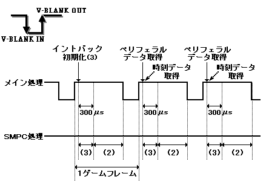
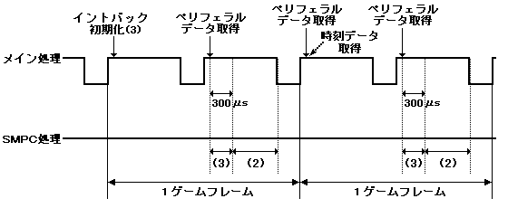
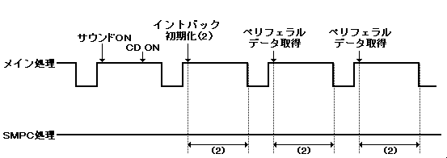
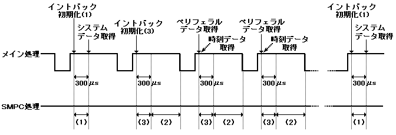

★PROGRAMMER'S GUIDE
★SMPCインタフェースユーザーズマニュアル
★PROGRAMMER'S GUIDE
★SMPCインタフェースユーザーズマニュアル
機 能 | ||
|---|---|---|
マスタSH2 ON | × | ○ |
スレーブSH2 ON | × | ○ |
スレーブSH2 OFF | × | ○ |
サウンドON | × | ○ |
サウンドOFF | × | ○ |
CD ON | × | ○ |
CD OFF | × | ○ |
システム全体リセット | × | ○ |
NMIリクエスト | × | ○ |
ホットリセットイネーブル | × | ○ |
ホットリセットディセーブル | × | ○ |
カートリッジコード取得 | ○ | × |
エリアコード取得 | ○ | × |
システムステータス取得 | ○ | × |
SMPCメモリ設定 | × | ○ |
SMPCメモリ取得 | ○ | × |
時刻設定 | × | ○ |
時刻取得 | ○ | × |
 |
直接SMPCに対してクロックチェンジコマンドを発行するのは禁止です。 使用する場合は、システムライブラリのSYS_CHGSYSCK()関数を使用してください。 |
|---|
ゲーム機 | |
|---|---|
サターンペリフェラル | デジタルデバイス |
アナログデバイス | |
ポインティングデバイス（マウス） | |
キーボード | |
マルチタップ（6P） | |
メガドライブペリフェラル | 3ボタンPAD |
6ボタンPAD | |
4Pアダプタ | |
マウス |




No. | ペリフェラルタイプ | データサイズ | ペリフェラルデータ(有効バイト数) |
|---|---|---|---|
0 | ポインティング | 3 | 取得データ(3) |
1 | デジタル | 2 | 取得データ(2) |
2 | 未接続 | 未接続 | 不定値 |
3 | アナログ | 5 | 取得データ(3) |
4 | 未接続 | 未接続 | 不定値 |
5 | 未接続 | 未接続 | 不定値 |
6 | キーボード | 3 | 取得データ(3) |
7 | 不定値 | 不定値 | 不定値 |
8 | 不定値 | 不定値 | 不定値 |
マルチタップID | マルチタップコネクタ数 | |
|---|---|---|
本体端子1 | 直接接続 | 1 |
本体端子2 | マルチタップ接続 | 6 |
#difine GET_NUM (9) /* 取得したいペリフェラルデータの数 */
#difine GET_SIZE (4) /* 対応するペリフェラルの、データサイズの最大値 */
#define WORKSIZE (GET_NUM * (GET_SIZE + 2) * 2) + GET_SIZE) /* ワークサイズ */
Uint32 work[WORKSIZE / 4]; /* ペリフェラルデータ取得ワーク領域 */
/* 注意：必ずグローバル変数で定義する事 */
typedef struct {
Uint8 type;
Uint8 size;
Uint16 data;
Uint8 extend_data[(GET_SIZE - 2)];
}PeriData;
PerGetSys *sys_data; /* システムデータ */
PeriData *get_per; /* ペリフェラル出力データポインタ */
PerMulInfo *mul_info;
Uint8 *get_tim; /* 時刻出力データポインタ */
PER_LInit(PER_KD_SYS, 0, 0, 0, NULL, 0); /* システムデータ取得を指定 */ ...
sys_data = PER_GET_SYS(); /* システムデータ取得 */ PER_LInit(PER_KD_PERTIM, GET_NUM, GET_SIZE, work, 0); /* ペリフェラルデータ + 時刻データ取得を指定. V-BLANKスキップ数は0 */ set_imask(0xF); /* 割込み全禁止 */ INT_SetScuFunc(INT_MSK_VBLK_OUT, vblank_out ); /* V-BLANK_OUT割込み関数を登録 */ INT_ChgMsk(INT_MSK_VBLK_OUT, INT_MSK_NULL); /* V-BLANK_OUT割込みイネーブル */ set_imask(0); /* 割込み全有効 */ ...
...
get_tim = PER_GET_TIM(); /* 時刻取得 */
if((mul_info[0].con + mul_info[1]) >= 3 ){ /* 有効端子数のチェック */
if( (get_per[2].id != PER_ID_NCON_UNKNOWN) && /* 未接続チェック */
(get_per[2].id != PER_ID_PNT) ){ /* 非マウス チェック */
if(((get_per[2].data) & PER_DGT_U) == PER_DGT_U){
/* コネクタ３の現在ペリフェラルデータがＵＰか？ */
...
void vblank_out(void){
SCL_VblankEnd(); /* フレームバッファ切換を最優先に行う事 */
PER_LGetPer((PerGetPer **)&get_per, &mul_info); /* ペリフェラルデータ取得 */
}
★PROGRAMMER'S GUIDE
★SMPCインタフェースユーザーズマニュアル